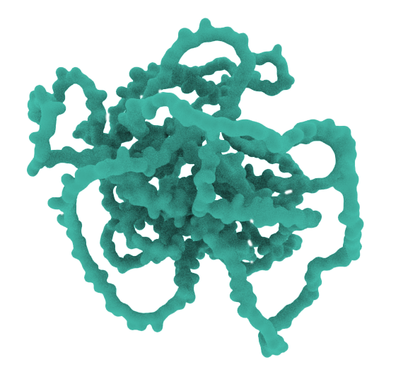
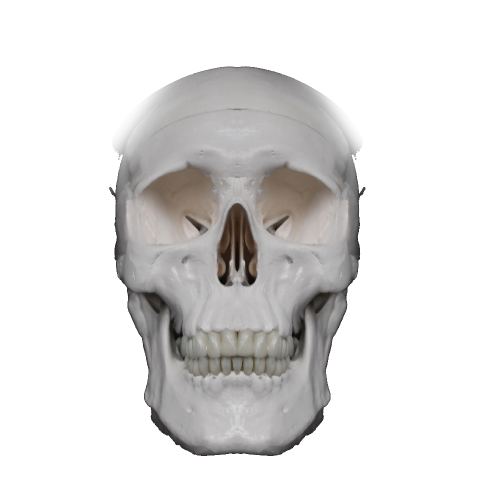
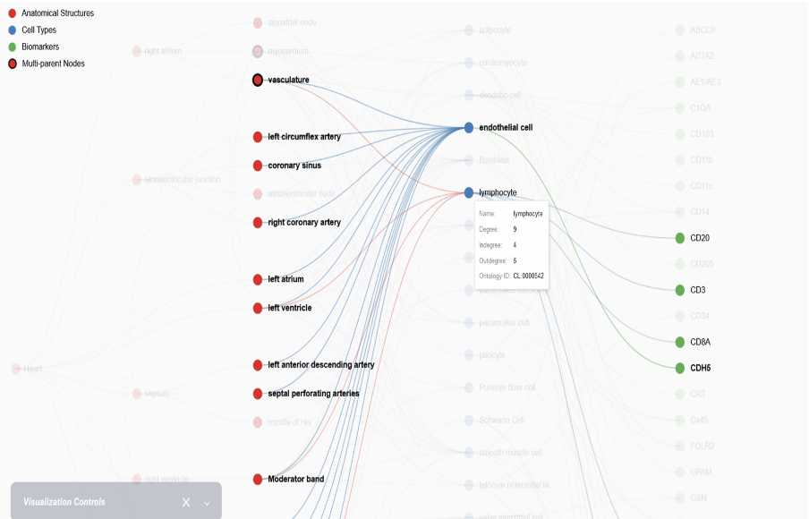

Prototype library
Scrollytelling elements and effects
Experimental patterns for evaluating media and scroll behavior
Scroll Effects
Crossfade images
Slow Fade In
Horizontal change
Scroll in Images

Kidneys

protein

podo

Scroll in Images 2

There are XX cells in the human body.
Move on image


Parallax example
This background image is parallaxed
Fade In effects
Fade In

Fade In From Bottom

Fade in slide from left

Images
Animation Using Animated WEBP File
3D
3D GLB file test
On touch 3D animation
Using spline seems like the easiest option for making simple 3D animations from the models we have.
Data Visualization
Sankey Diagram
Embedded directly from the software.docs.hubmapconsortium.org site. Not always reliable.
CCF Organ info example
Sounds
Music/audio test
Movies
Displaying text over a video video
Text over video example